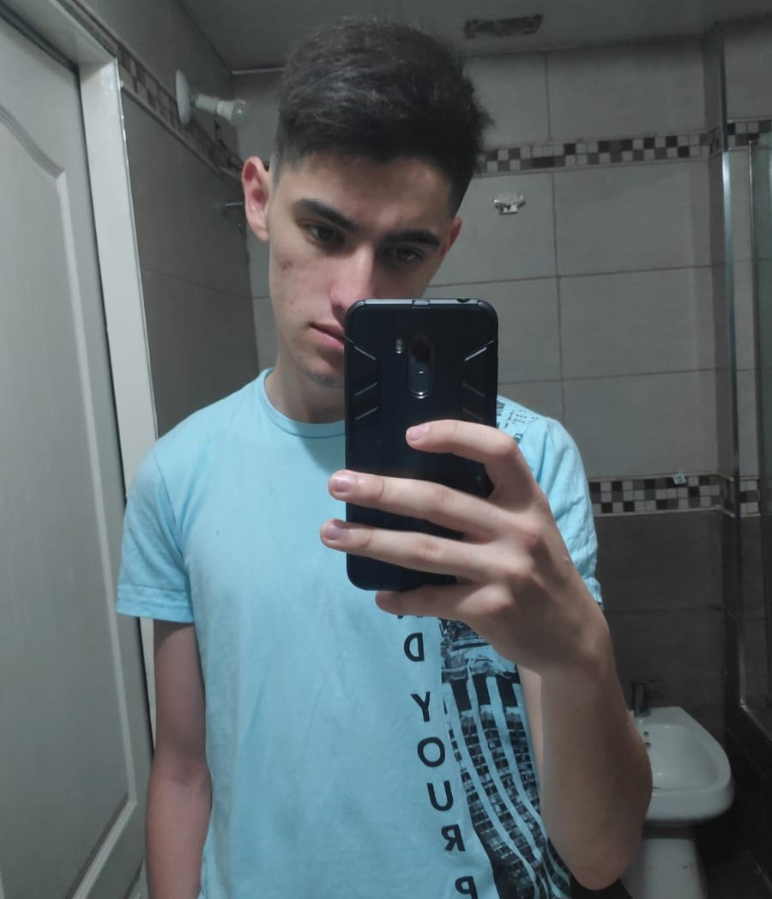

Ruben Avans

Edad: 18
Provincia: Buenos Aires
Localidad: Cañuelas
Dirección: Castelli 301
Estudios: Cursando el secundario
Escuela: Escuela Educacion Técnica Fundación Fangio (Mercedes Benz)
Curso: 7° año
Idiomas:
- Ingles: Avanzado (por rendir First Certificate)
- Alemán: Básico (A1)
Programas:
- Autocad: Avanzado
- SolidEdge: Intermedio
Hobbies:
- Juego al fútbol
- Juego videojuegos
- Escucho música
Soy Ruben Avans, tengo 18 años e hincha de River. A pesar de no haber terminado el
secundario, tengo algo de
experiencia laboral. Clases particulares a compañeros o bien enseñar a utilizar programas de dibujo
técnico
como Autocad y SolidEdge, ya sea a otros alumnos o bien a personas que simplemente querían aprender
a
utilizar el programa. Soy de veloz aprendizaje y se me da facil enseñar.